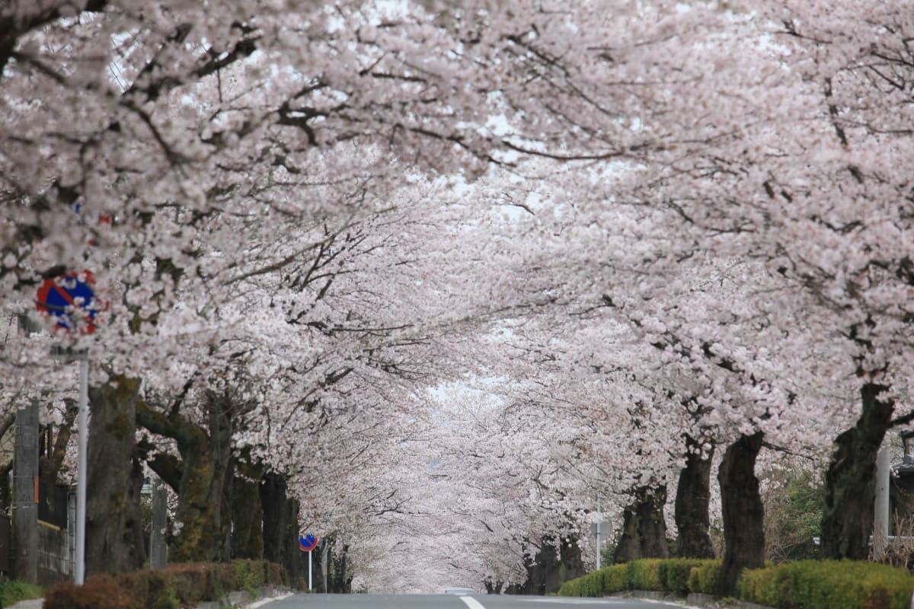
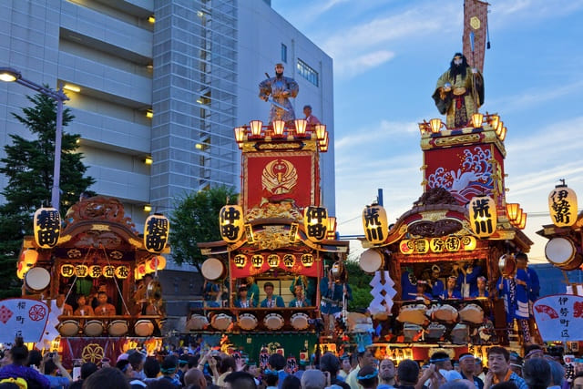
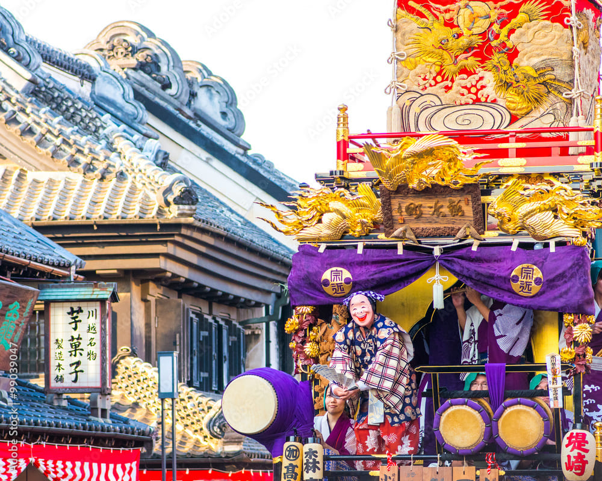
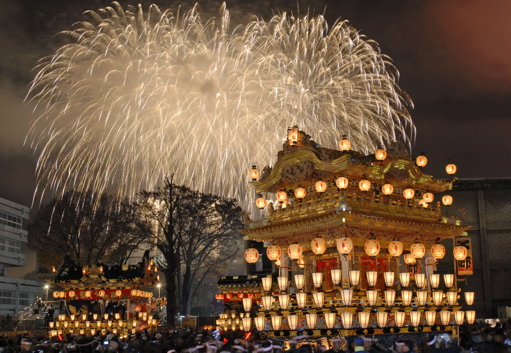

SAITAMA MATSURI
埼玉の祭りへ
ようこそ、灯りのたびへ!
秩父の夜祭、川越の絢爛な山車、熊谷のうちわ祭り。四季を通じて、埼玉のまちには受け継がれてきた祭りの灯りがあります。
祭りをさがす
次の祭りまであと
--
日
-
さいたま市の現在の天気
--℃・読み込み中
めぐり方
三つの入り口から、埼玉へ
歴史をたどるか、季節を追うか、地図から決めるか。気分に合う入り口を選んでください。
四季と歴史
季節を彩り、受け継がれてきた祭り
はじめて埼玉の祭りを訪れるなら、まずこの四つから。開催時期とあわせてご紹介します。

4月上旬〜中旬
国指定名勝の岩畳
長瀞岩畳の桜まつり（長瀞町）
国指定名勝の岩畳のまわりが、数千本の桜でピンク色に染まります。荒川の川面と岩肌の対比も見どころ。長瀞町を代表する春の祭りです。
春の祭りを見る
7月20日〜22日
関東三大祇園祭
熊谷うちわ祭
「関東一の祗園」と称される熱気。山車と屋台が街を練り歩く7月の祭り。江戸時代の祗園信仰に由来し、団扇を配ったことから「うちわ祭」と呼ばれるように。
由来を読む
10月第3土日
国指定重要無形民俗文化財
川越まつり
絢爛豪華な山車が小江戸の町並みを巡行。慶安元年(1648年)、川越氷川神社の祭礼として始まり、350年以上続く伝統行事でユネスコ無形文化遺産にも登録。
由来を読む
12月2日〜3日
日本三大曳山祭
秩父夜祭
日本三大曳山祭のひとつ。冬の夜空を彩る花火と、笠鉾・屋台の競演。300年以上の歴史を持ち、秩父神社の例大祭としてユネスコ無形文化遺産にも登録。
由来を読む